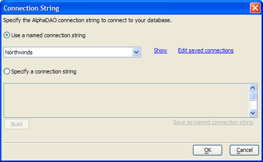

Connection String Dialog
The Connection String dialog allows you to define a connection with a SQL back-end database. You can open the Connection String dialog from the Database Explorer.

Optionally, to use an existing connection string:
Select Use a named connection string.
Select the connection string from the drop-down list.
Click OK to continue.
Optionally, to create a new connection string:
Select Specify a connection string.
Optionally, enter the string into the text box.
Optionally, click Build to display the <span class=Screen>Create SQL Connection String</span> dialog.
Optionally, click Save as named connection string to create a reusable connection.
Click OK to continue.
Limitations
Desktop applications only.
See Also
Create SQL Connection String Dialog